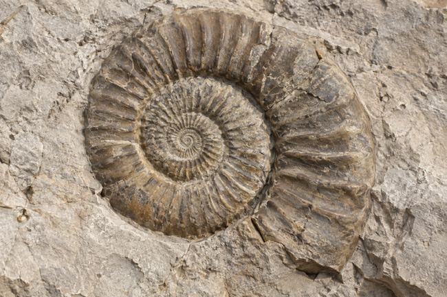
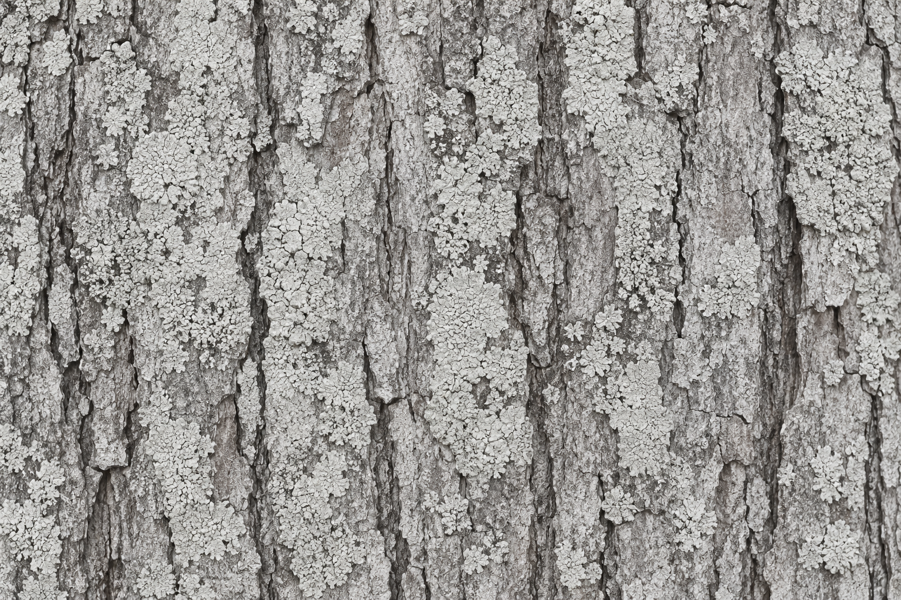
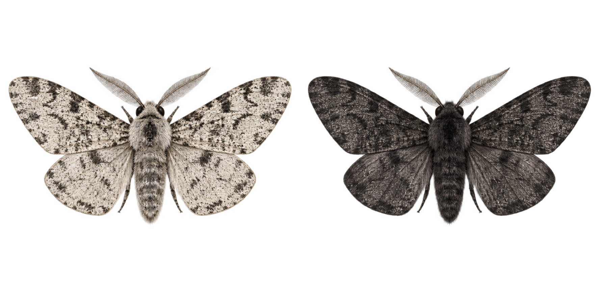

Erkunden und verstehen
Lies die Informationen und untersuche die Bilder. Die Aufgaben helfen dir, Zusammenhänge zu erkennen.
Dein Lernbereich
Woher kommt die Vielfalt des Lebens?
Untersuche Spuren der Vergangenheit, entdecke Zusammenhänge und prüfe dein Wissen. Wähle ein Lernprogramm und arbeite in deinem Tempo.

01KI-generierte IllustrationWie entstehen Fossilien? Was verraten Gesteinsschichten über ihr Alter? Und was lässt sich aus Funden über frühere Lebensräume schließen?


02KI-generierte IllustrationenWer überlebt und bekommt Nachkommen? Fange Falter auf heller und dunkler Rinde. Vergleiche deine Runden mit anderen und untersuche, wie sich die Farbanteile über Generationen verändern.
Lies die Informationen und untersuche die Bilder. Die Aufgaben helfen dir, Zusammenhänge zu erkennen.
Nutze die Rückmeldungen im Lernprogramm. Im Birkenspanner-Spiel vergleichst du Fangzahlen und Farbanteile über mehrere Generationen.
Im Lernprogramm speicherst du am Ende deinen Namen und schickst den Screenshot deiner Lehrerin. Im Spiel sicherst du deine Ergebnisse und vergleichst sie mit der Klasse.